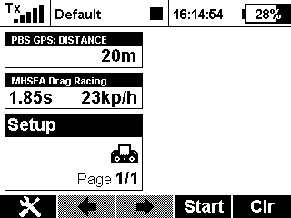

Here is an application that lets you set a switch to start a audio file to begin the countdown. As soon as the helicopter reaches a set distance from the start up point the elapsed time and the end of run speed is read out. Also as long as the switch remains in the 'go' position, there is a readout on the screen of the time and end speed. The app also logs the time and speed to the jeti log file using the new tx firmware features.
Version: 1.2 - Built in audio file and squished a few bugs
Compatibility: DC/DS-14/16/24, DS-12
MHSFA Drag is part of tools available from:AlCormack